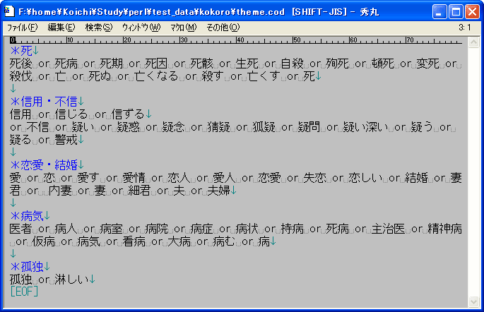
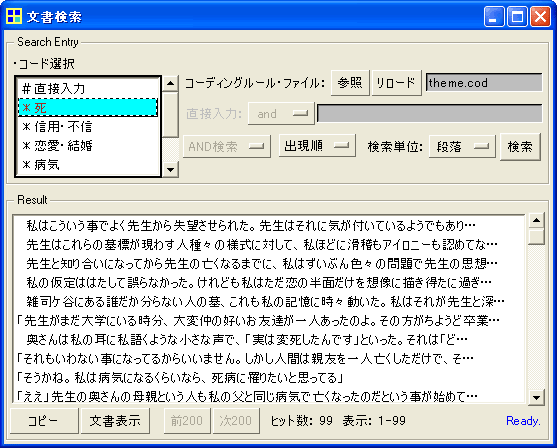

複数の検索条件をテキストファイルに記述してコーディングルール・ファイルと呼ばれるものを作製すれば、このページで後述する検索や、別ページで述べる数え上げ・集計に利用することができます。（おそらく、検索よりも、数え上げ・集計が主用途となる場合が多いでしょう）
下図がコーディングルール・ファイルの例です。「＊」で始まっている行が検索条件の名前（コード名）を表し、それに続く行が検索条件を表しています。

条件指定（コーディングルール）では、下の表に示すような条件を、and, or, not, ()などで自由に組み合わせて用いることができます。
上に例示したコーディングルール・ファイルを読み込んで文書検索を行っている画面が下の図です。

この画面では、複数のコードを選択して、AND検索やOR検索を行うこともできます。 「＃直接入力」とのAND検索を行えば、コーディングルール・ファイルから読み込んだ条件に、直接入力した条件を追加して検索を行うことができます。（コーディングルール・ファイルを変更せずに、検索条件を追加・変更してみたい場合には便利でしょう）
→Back
Hosted on GitHub